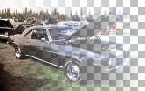
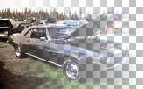
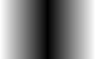
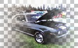
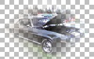
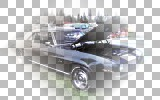
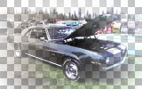
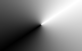

Gradient Tool
The Gradient Tool allows you to draw gradients in several formats. With its transparency mode, you can also "fade" or "blend" two images together.
Gradient Types
Each gradient type can be chosen from the Gradient section of the toolbar:

The first column of gradients below shows how the gradient looks when drawn in Color mode with two opaque colors (alpha value of 255).
The second column shows the effect of drawing a gradient with the Transparency Mode on the following image:

- Linear
 

- Linear (Reflected)
 
- Diamond
 

- Radial

- Conical

Drawing a Gradient
To draw a gradient, simply click and drag on the canvas as if you were drawing a line. The gradient will be drawn as you move the mouse which should let you quickly figure out the placement for the gradient you want to draw. After you release the mouse button, you will be able to adjust the gradient control points by moving the circular nubs. Right-clicking on a nub will swap the roles of the primary and secondary colors. If you move a nub while holding both mouse buttons, then both nubs will be moved.
Color Mode
The default type of gradient is a color gradient that affects all color channels and the alpha channel. The gradient will be drawn such that it fades from the primary color to the secondary color. If you use the right mouse button, then the roles of the primary and secondary colors will be reversed. The gradients in the first column above were drawn using the default colors of black and white.
Transparency Mode ("Fading" / "Blending")
The special transparency mode can be used to fade out part of an image. This can also be quite useful for blending two images together. To access this mode, click on the button that controls the Gradient mode in the toolbar and select Transparency Mode:

This type of gradient will only affect the alpha channel of the current layer. The gradient will fade from the alpha value of the primary color to the inverse of the alpha value of the secondary color. If you use the right mouse button, then the gradient will fade from the inverse of the alpha value of the secondary color to the alpha value of the primary color. To put it more simply, treat transparency gradients as always fading from opaque (255 alpha) to transparent (0 alpha).
To do a "fade" or "blend", place the two images on separate layers, and then use a transparency gradient on the top layer.
As an example, using the two-layer discussed in Layers and Blend Modes, the following cross-faded image can be easily created by drawing a transparency gradient from left to right on the layer with the picture of Seattle:

Copyright © 2007
Rick Brewster, Tom Jackson, and past contributors. Portions Copyright
© 2007 Microsoft Corporation. All Rights
Reserved.